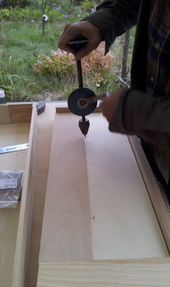

Hörkostproben Konzerttermine Clavichord im Museum Bau-&Spielkurse Repertoire Über uns Kontakt
 |
Baukurs - "Clavichord / Reiseklavier selber bauen und spielen" - Musikkurs
Kursdauer: eine Woche |
Venedig, Italien Oktober -
November (jede Woche) Anmeldeschluss: 30. June ♪♪♪♪♪♪ Photos Venedig ♪♪♪♪♪♪♪ Dresden, Deutschland Juni-
August (jede Woche) Anmeldeschluss: 30. April ♪♪♪♪♪♪ Photos Dresden ♪♪♪♪♪♪♪ Kontakt: eine_floete[at]icloud.com |
Über die Workshops
Bauen Sie Ihr eigenes Clavichord und erlernen Sie grundlegende Spieltechniken. In 5 Tagen fertigen Sie Ihr persönliches Clavichord nach dem Original C-c³ 2-4-fach gebunden, ca. 300 × 100 × 980 mm, ca. 8kg leicht tragbar mit Griff. Sie erhalten die Grundplatte mit Anhang und Stimmstock verleimt, sowie auch den Deckel vorgefertigt. Alle Arbeiten werden mit Handwerkzeugen durchgeführt. Bringen Sie dazu Hammer, Laubsäge, Arbeitskleidung, Gehörschutz und Lust an handwerklicher Gestaltung und musikalischem Ausdruck mit. Alle Materialien, Kursgebühr, Werkzeugnutzung sind im Preis enthalten. Mahlzeiten zu eigenen Kosten. Kurspreise fragen Sie bitte bei uns an. Sommerkurse in Dresden im Clavichordgarten, Winterkurse in Venedig, Osaka. Hier gibt es noch weitere Information zum Clavichord- und Klavierspiel [pdf]
 |
 |
 |
 |
 |
Hörkostproben
F. Tàrrega - "Recuerdos de la Alhambra"
W. A. Mozart, aus Don Giovanni - "Deh vieni alla finestra"
F. Tàrrega - "Asturias"
MDR-Kultur - "Hörer empfehlen Kultur"